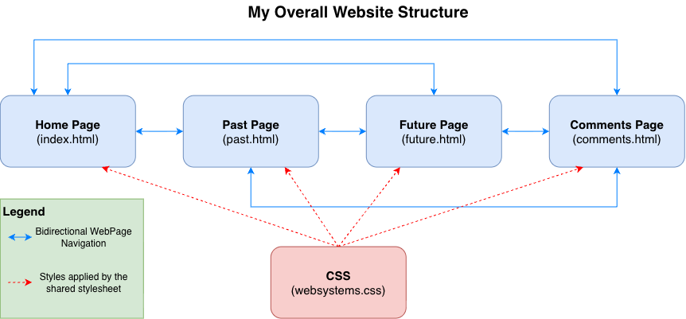
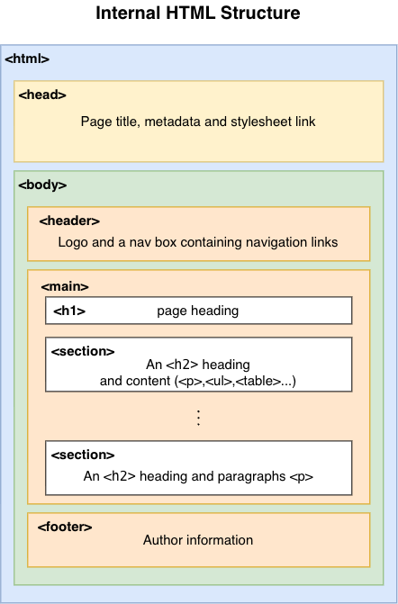

Comments Page
This page explains the website’s HTML and CSS techniques, covering overall website design, internal HTML structure, CSS implementation, design reasoning and accessibility.
Overall Website Structure
My website consists of four HTML pages with distinct purposes and one shared CSS stylesheet. Its structure supports consistent presentation and clear navigation, with:
- A consistent navigation bar links to all four pages, allowing direct navigation without returning to Home or using the browser’s back button.
- The shared stylesheet provides a consistent visual theme across all pages.
- Relative paths preserve link functionality after uploading to Ed, provided the folder structure remains unchanged.
- Overview cards on Home provide descriptions and links to help users explore the website.
| Page | Content organisation |
|---|---|
| Home | An introduction, About Me with a portrait, and four website overview cards. |
| Past | An introductory section with navigation links to the content within the page. The page covers Studies, Experiences and Technical Skills, each presented in a table. |
| Future | An introductory section without internal navigation links, as the page content is short. The page covers future goals and skills to improve, presented as lists in two cards. |
| Comments | An introductory section with navigation links to the content within the page. The page covers overall website architecture, internal HTML structure, CSS organisation, aesthetics and design reasoning, and accessibility and resizing. |

Internal HTML Structure
Shared structure
Each page separates document information from visible content. The <head> contains metadata, the page title and the stylesheet link, while the <body> contains a <header> with the logo and <nav>, a <main> for primary content, and a <footer> for author information.
Within <main>, I use <section> to group related content under headings and <div> for layout containers such as cards. Semantic elements clarify the content’s purpose for browsers and assistive technologies, keeping the structure understandable without CSS. A <div> has no specific semantic meaning.
A consistent header, navigation and footer make the pages familiar to visitors, although shared navigation changes require updating every HTML file.
Differences between pages
The main differences between my pages are within <main>, where I choose elements to suit each page’s content:
- Home: Paragraphs and a portrait introduce me, followed by four cards with page descriptions and navigation links.
- Past: Three tables organise my studies, experiences and technical skills for comparison. The rowspan attribute groups subjects within the same study area.
- Future: Two cards separate my goals from skills to improve, each using a heading and an unordered list.
- Comments: Headed sections, paragraphs, tables, cards, lists and diagrams explain the website’s structure and design.

Classes, IDs and navigation
Here, I use classes for reusable styling and IDs to identify unique sections for navigation within a page. An element can use both: its class applies shared styling, while its ID provides a unique link destination.
I provide four navigation links on every page, plus internal links on Past and Comments to reach specific sections. I use relative paths so links continue working after upload, provided the folder structure is preserved.
Text Emphasis and Accessible Content
I use <span> with a class to visually highlight my name through CSS while keeping it inline, whereas <strong> conveys semantic importance. I also use table captions to identify each table’s purpose and scoped column headings to associate labels with their data. My portrait includes alternative text describing the image when it cannot be seen. Even without CSS, headings, paragraphs, lists and tables preserve the content’s logical structure.
CSS Implementation
I use one external CSS stylesheet to maintain a consistent visual design across all four HTML pages and simplify updates to shared styles.
| Purpose | Selectors | Implementation and reasoning |
|---|---|---|
| General styling | *, body | I use box-sizing: border-box to include padding and borders within specified dimensions, making sizes easier to control. Shared colours, fonts and line spacing provide consistency, while word wrapping helps prevent long text from overflowing. |
| Page layout | #page-main | I centre the main content at 90% of its container’s width to leave side margins for readability. Padding separates content from its edges, while a minimum height maintains the layout on shorter pages. |
| Header layout | .page-header, .logo, .nav-bar | I use sticky positioning to keep navigation available while scrolling. I float the logo left and navigation right to separate the website’s identity from its navigation links. |
| Navigation | .nav-bar ul, .nav-bar li, .nav-bar a | I remove list markers and arrange navigation links horizontally for a cleaner appearance. Spacing makes individual links easier to distinguish and select. |
| Link feedback |
.nav-bar a[aria-current="page"] a:hover .nav-bar a:hover |
I use blue text and an underline to identify the current page. Hover styles provide visual feedback when users move their pointer over links. |
| Text hierarchy and highlighting | h1, h2, h3, p, .highlight | I adjust heading sizes and text spacing to establish a clear visual hierarchy. Highlighting my name draws attention to key information and helps users scan the content. |
| Content sections | .page-section | I add spacing and border lines between major topics to separate sections and improve readability. |
| Images |
.portrait-img .overall-design-img .html-structure-img |
I centre images and size them proportionally to fit the surrounding content and adapt to different window sizes without distortion. |
| Content cards | .page-grid, .page-card | I use Grid to arrange cards into two equal-width columns with gaps. Background colours and borders group related content and maintain a consistent design. |
| Tables | table, td, th, caption | I style table widths, borders, alignment and headings to make information easier to read and compare while matching the website’s design. |
| Footer | .page-footer | I use spacing, a top border and text styling to distinguish author information from the main content. |
| Responsive layout | @media (max-width: 650px) | I centre the header content, remove floats and stack cards into one column on smaller screens to improve readability and reduce crowding. |
| Internal navigation spacing |
#page-main #past-study #past-experience Other section IDs used for internal navigation |
I add scroll-margin-top to leave space above selected anchor destinations, helping prevent the sticky header from covering content when users follow internal links. |
I researched and chose CSS Grid because my earlier inline-block layout did not automatically equalise neighbouring card heights, while fixed heights could cause text to overflow on narrower screens. Grid allows cards within each row to stretch to the same height, accommodating different amounts of text without a fixed height.
Design Reasoning
My website design uses a simple grey, white, black and blue colour scheme to create a professional look and keep the focus on the content.
| Design choice | Reasoning |
|---|---|
| Light grey background and white header with black border | I use a light grey background to keep attention on the dark content. A white header with a black border separates navigation from content while scrolling. |
| Dark text and blue accents | I use dark text for contrast against light backgrounds. Blue accents reinforce my colour theme and draw attention to links, my name and selected borders. |
| Arial and fallback fonts | I choose Arial for its familiar, readable appearance, with Helvetica and a generic sans-serif as alternatives if Arial is unavailable. |
| Heading sizes | I use 36px, 28px and 24px for page titles, sections and subsections to make the content hierarchy clear and easy to scan. |
| Section borders | I use thin top borders to separate topics and help readers recognise transitions between sections. |
| Cards | I use cards to divide content into manageable groups. Pale backgrounds and padding separate each group, while blue top borders maintain the colour theme. |
| Tables | I use tables to make experiences, skills, CSS techniques and design decisions easy to compare. Blue headings with white text distinguish column labels from data. |
| Image styling | I give my portrait a blue border and rounded corners to match the theme and cards. I centre diagrams with transparent backgrounds and adjust their widths to make key information readable. |
| Consistent navigation and footer | I keep navigation and footer placement consistent so pages feel familiar. The active link identifies the current page, while centred, italic footer text and a separating border distinguish author information. |